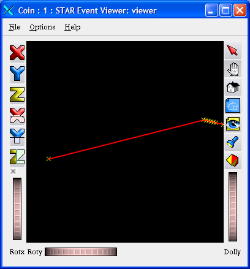

stardev
ln -s $STAR/QtRoot/qtExamples/QtGBrowser/.rootrc
> root.exe Draw3D.C

Draw3D.C
void Draw3D()
{
gROOT->Macro("Load.C");
gEventDisplay->Draw3DTest();
}
root[0] gROOT->Macro("Load.C");
root[1] gEventDisplay->ShowTest();
| Event over detector geometry | Event with no detector geometry |
|---|---|

|  |
The StDraw3D::Draw3DTest should give you a clue how the class can be used
void StDraw3D::Draw3DTest(){
float xyz[] = { 189.195, 27.951, 123.966
,187.195, 28.6187, 122.89
,181.195 ,30.6788 ,119.556
,179.195 ,31.3387 ,118.454
,177.195 ,32.0065 ,117.328
,175.195 ,32.6132 ,116.26
,173.195 ,33.2385 ,115.146
,171.195 ,33.8552 ,114.016
,169.195 ,34.3924 ,112.964
};
int sizeXYZ = sizeof(xyz)/sizeof(float)/3;
fprintf(stderr," %d %p\n", sizeXYZ,xyz);
// Draw the 3D polymarkers
Draw3D(sizeXYZ,xyz);
SetComment("The hits from the TPC sector");
// Draw the 3D polyline
Line(sizeXYZ,xyz,kPrimaryTrack);
SetComment("The recontstructed track");
}
To draw the components (tracks, hits etc) of the StEvent,

use the ROOT session like
root.exe # or "root4star", do NOT use just "root". "root" is a shell script that can screw the environment
root[0] .x Load.C
root[1] .x bfc.C(0,"doevents","st_physics_6048025_raw_1020002.event.root");
root[2] // One can use any other chain parameters instead of "doevents" above
root[3] chain->MakeEvent(); // to read the next event
root[4] StEvent *event = (StEvent *)chain->GetDataSet("StEvent"); // Access the StEvent pointer
root[5] gEventDisplay->SetBkColor(kWhite); // Change the backgorund color
root[6] gEventDisplay->Tracks(event); // Draw the tracks
root[5] gEventDisplay->Tracks(event,primary); // to draw the tracks

Invocation of the
root.exe [6] gEventDisplay->Clear(); // Clear the previous picture
root.exe [7] gEventDisplay->Hits(event,kUsedHitsTracks);// Draw tracks and its his
To hide the detector geometry components and
improve the "display" response time one can change
the Coin widget attributes from
- Click with the "right mouse button" over the OpenGL widget working area;
- Select from the Coint "Context menu"
"Draw Styles> -> "Still darwstyle" -> "Points"
or"Draw Styles> -> "Animating drawstyle" -> "Points"
to get the low resolution picture (see below) - To restore the original view you can always use
the same menu and select
"As Is"
| Original "as is" view | Coin3D "Context menu" | "Points" view |
|---|---|---|

|

|

|
The macro below shows how one can navigate the StEvent structure read
from the root files to find and draw the track
providing the eventNumber and trackId. You can pick this macro from
root.exe Plot3Dtracks.C
void Plot3Dtracks(int eventNumber=22394, int trackId=425, const char *file="st_physics_8112087_raw_1020015.event.root"){
// This example shows how to use Draw3D class to draw the
// track if one knows the track "event number" and "track id".
gROOT->Macro("Load.C");
gROOT->LoadMacro("bfc.C");
bfc(0,"in,StEvent",file);
StEvent *event = 0;
gEventDisplay->SetBkColor(kWhite);
printf(" Look up the file %s to find the track %d from the event %d \n"
, file,trackId,eventNumber);
bool trackWasFound = false;
bool eventWasFound = false;
while (!eventWasFound && !chain->MakeEvent() ) {
// Access the StEvent pointer
event = (StEvent *)chain->GetDataSet("StEvent");
// ------------------ select event -----------------------
if (chain->GetEventNumber() == eventNumber) { eventWasFound = true; break; }
// --------------------------------------------------------
}
if (eventWasFound) {
const StSPtrVecTrackNode& theNodes = event->trackNodes();
StTrack *track = 0; int sz = theNodes.size();
for (unsigned int i=0; i<sz; i++) {
// --------------------- select tracks -------------------------//
track = theNodes[i]->track(global); //
if (track->key() == trackId) { trackWasFound = true; break; } //
// --------------------------------------------------------------//
}
//-----------------Draw the track ---------------//
if (trackWasFound) gEventDisplay->Track(*track); //
//-----------------------------------------------//
}
}
Here you are the
StuDraw3DEvent
(see
STAR CVS also) class API including the methods from the base
StDraw3D
(see
STAR CVS also)
class.
The definitions of the ROOT color and marker style attributes are provided by
the TAttMarker C++ class documentation.
StuDraw3DEvent C++ class API
enum EDraw3DStyle {kVtx,kPrimaryTrack,kGlobalTrack,kUsedHit,kUnusedHit,kTrackBegin,kTrackEnd,kUser};
class StuDraw3DEvent : public StDraw3D {
StuDraw3DEvent(TVirtualPad *pad = 0); // "by default" (pad=0) the new viewer is to be created automatically
// Draw StEvent "StTrack" object with the ROOT color, style, size attributes
virtual TObject *Track(const StTrack &track
, Color_t col
, Style_t sty= Style_t(-1)
, Size_t siz = Size_t (-1));
// Draw StEvent "StTrack" object with the predefined attrbutes
virtual TObject *Track(const StTrack &track, EDraw3DStyle sty=kPrimaryTrack);
// Draw StEvent "StMeasuredPoint" object (like StHit, StVertex) with the ROOT color, style, size attributes
virtual TObject *Hit(const StMeasuredPoint &hit
, Color_t col
, Style_t sty= Style_t(-1)
, Size_t siz = Size_t (-1));
// Draw StEvent "StMeasuredPoint" object (like StHit, StVertex) with the predefined attrbutes
// This is an overloaded member function, provided for convenience. It behaves essentially like the above function.
virtual TObject *Hit(const StMeasuredPoint &hit, EDraw3DStyle sty=kUsedHit);
// Draw StEvent "StMeasuredPoint" object (like StHit, StVertex) with the ROOT color, style, size attributes
// This is an overloaded member function, provided for convenience. It behaves essentially like the above function.
virtual TObject *Vertex(const StMeasuredPoint &hit
, Color_t col
, Style_t sty= Style_t(-1)
, Size_t siz = Size_t (-1));
// Draw StEvent "StMeasuredPoint" object (like StHit, StVertex) with the predefined attributes
// This is an overloaded member function, provided for convenience. It behaves essentially like the above function.
virtual TObject *Vertex(const StMeasuredPoint &hit, EDraw3DStyle sty=kVtx);
virtual TObject *TrackInOut(const StTrack &track, Bool_t in
, Color_t col= Color_t(-1)
, Style_t sty= Style_t(-1)
, Size_t siz = Size_t (-1));
virtual TObject *TrackInOut(const StTrack &track, EDraw3DStyle sty=kUsedHit, Bool_t in=kTRUE);
// Draw the array of the float coordinates with ROOT TPolyMarker3D class and the predefined attributes
virtual TObject *Points(int n, const float *xyz, EDraw3DStyle sty);
// Draw the array of the float coordinates with ROOT TPolyMarker3D class and the ROOT color, style, size attributes
virtual TObject *Points(int n, const float *xyz
, Color_t col= Color_t(-1)
, Style_t sty= Style_t(-1)
, Size_t siz = Size_t (-1));
// Draw ONE 3D marker with ROOT TPolyMarker3D class and the ROOT color, style, size attributes
virtual TObject *Point(float x, float y, float z
, Color_t col= Color_t(-1)
, Style_t sty= Style_t(-1)
, Size_t siz = Size_t (-1));
// Draw ONE 3D marker with ROOT TPolyMarker3D class and the predefined attrbutes
virtual TObject *Point(float x, float y, float z, EDraw3DStyle sty);
// Draw the array of the float coordinates with ROOT TPolyLine3D class and the ROOT color, style, size attributes
virtual TObject *Line(int n, const float *xyz
, Color_t col= Color_t(-1)
, Style_t sty= Style_t(-1)
, Size_t siz = Size_t (-1));
// Draw the array of the float coordinates with ROOT TPolyLine3D class and the predefined attributes
virtual TObject *Line(int n, const float *xyz, EDraw3DStyle sty);
// Draw the test example
void Draw3DTest();
};
To report the bug use STAR Bug report facility
Valeri Fine
(fine at bnl dot gov )